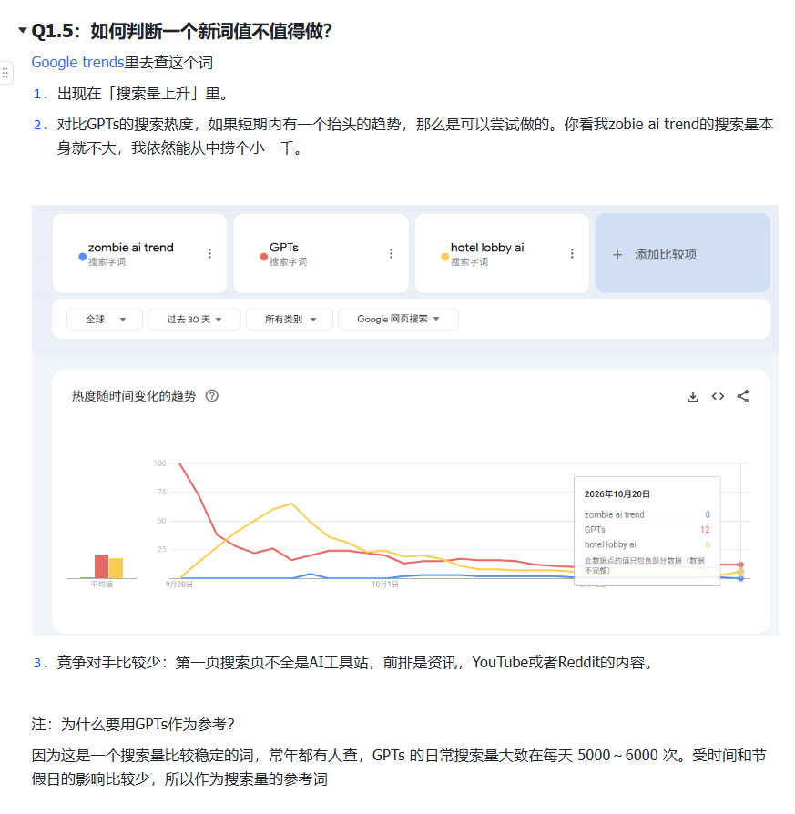

Q1.5：如何判断一个新词值不值得做？
Google Trends 里去查这个词。
- 出现在「搜索量上升」里。
- 对比 GPTs 的搜索热度：如果短期内有抬头的趋势，那么是可以尝试做的。zombie ai trend 的搜索量本身就不大，我依然能从中捞个小一千。
- 竞争对手比较少：第一页搜索结果不全是 AI 工具站，前排是资讯、YouTube 或者 Reddit 的内容。

注：为什么要用 GPTs 作为参考？
因为这是一个搜索量比较稳定的词，常年都有人查，GPTs 的日常搜索量大致在每天 5000～6000 次。受时间和节假日的影响比较少，所以作为搜索量的参考词。